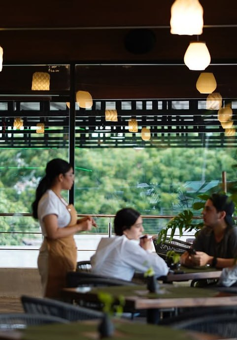

SOBRE NOSOTROS
¿QUIENES SOMOS?
Somos un restaurante dedicado a ofrecer platillos y bebidas saludables para aquellos que deseen un lugar de entretenimiento para platicar y pasar el rato comiendo un platillo saludable, pero delicioso.
VER EL MENÚ >CONTÁCTANOS
+58 412-640590
@SANOPECADOMCBO
SANOPECADOMARACAIBO@GMAIL.COM
HORARIO DE ATENCIÓN
LUNES A JUEVES - 7:30a.m. a 10:00p.m.
VIERNES Y SÁBADO - 7:30a.m. a 11:00p.m.
DOMINGO - CERRADO

